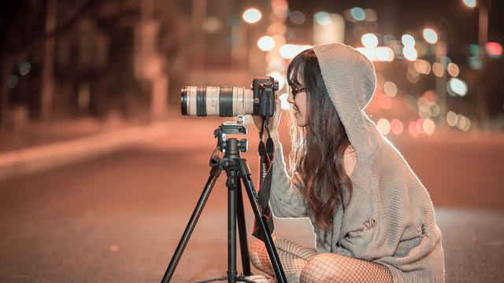

1. Desain Grafis
Desain grafis atau rancang grafis adalah proses komunikasi menggunakan elemen visual, seperti tipografi, fotografi, serta ilustrasi yang dimaksudkan untuk menciptakan persepsi akan suatu pesan yang disampaikan. Bidang ini melibatkan proses komunikasi visual dan desain komunikasi. Desain grafis merupakan suatu bentuk dari komunikasi visual yang memanfaatkan gambar sebagai media untuk menyampaikan pesan atau informasi seefektif mungkin. Desain grafis ini berasal dari dua kata, yakni desain dan grafis.
Desain adalah metode perancangan estetika yang didasari dengan kreatifitas, sedangkan grafis adalah ilmu dari perancangan titik maupun garis sehingga akan membentuk sebuah gambar yang dapat memberikan informasi serta berhubungan dengan proses pencetakan. Sehingga dapat kita tarik kesimpulan bahwa desain grafis ini merupakan ilmu yang mengandalkan kreatifitas untuk menciptakan sebuah rancangan bentuk gambar dengan tujuan akhir sebagai kepentingan percetakan.
2. Fotografi
 Fotografi adalah proses melukis/menulis dengan menggunakan media cahaya. Sebagai istilah umum, fotografi berarti proses atau metode untuk menghasilkan gambar atau foto dari suatu objek dengan merekam pantulan cahaya yang mengenai objek tersebut pada media yang peka cahaya. Seperti yang disinggung diatas bahwa secara umum pengertian fotografer dapat diartikan sebagai orang yang melakukan aktivitas fotografi. Pengertian tersebut merupakan pengertian singkat dari fotografer. Namun fotografer lebih komplek jika dilihat dari kegiatannya yaitu ada fotografer profesional dan hobi.
Pengertian fotografer profesional adalah orang yang bekerja dengan konsentrasi tinggi dan cenderung menjelajahi sesuatu secara mendalam. Sehingga gambar yang dihasilkan oleh fotografer profesional bisa memiliki harga jual yang tinggi karena tidak hanya melihat dari segi angle saja melainkan juga seni yang dihasilkan. Sedangkan pengertian fotografer hobi, seperti halnya dengan namanya yaitu hobi. Fotografer hobi atau amatir merupakan orang yang hanya menyukai aktivitas fotografi namun tidak terlalu memperhatikan segi keseniannya.
3. Videografi
Videografi mengacu pada proses pengambilan gambar bergerak di media elektronik dan bahkan media streaming. Istilah ini mencakup metode produksi video dan pasca produksi. Ini dianggap setara dengan video sinematografi. Selain bertujuan untuk membuat video tersebut semakin menarik. Videografi digunakan untuk sebuah kajian maupun dibuat untuk kemudian dilihat di kemudian hari. Videografi sudah merambah ke semua kalangan dan sudah banyak digunakan sesuai dengan kepentingan atau keperluan masing-masing.
Videografi juga ada yang dibuat secara individu dan tidak sedikit yang membuat videografi secara berkelompok. Videografi sendiri banyak digunakan oleh berbagai kalangan untuk berbagai kepentingan. Mulai dari individu hingga kelompok. Bahkan setiap negara dapat dipastikan memiliki arsip tentang sejarah negaranya yang berupa video.
4. Broadcasting
Broadcasting / penyiaran adalah sebuah prroses pengiriman sinyal ke berbagai lokasi secara bersamaan baik melalui satelit, radio, televisi dan media lainnya. Broadcasting merupakan salah satu bagian dari ilmu komunikasi. Broadcasting sendiri lebih memfokuskan ke bidang penyiaran. Dan orang yang melakukan penyiaran disebut broadcaster / penyiar.
Dalam mengkomunikasikan suatu karya dan informasi penyiaran / broadcasting memiliki pengaruuh yang sangat besar untuk disebarkan kepada masyarakat luas. Konten yang dibuat harus memiliki daya tarik yang tinggi agar tidak membosankan untuk dilihat dan didengarkan, tapi tidak mengubah fakta yang ada. Tapi di sisi lain menyampaikan pesan cara umum, cepat dan selintas untuk menjangkau khalayak luas dalam suatu rentang waktu dapat menimbulkan konflik dengan cepat juga karena tidak diproses panjang dulu.